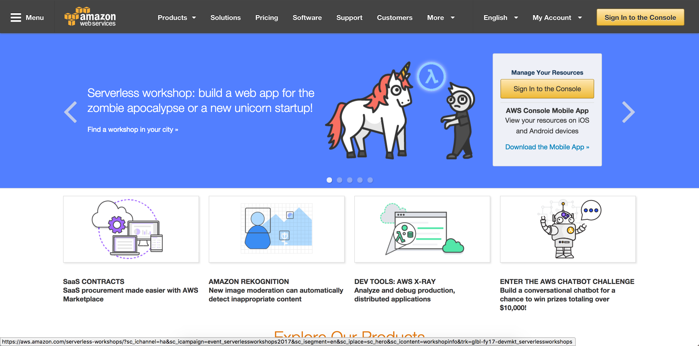
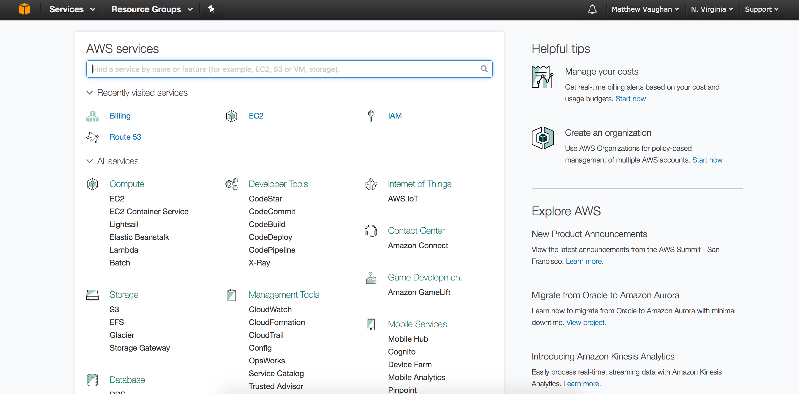
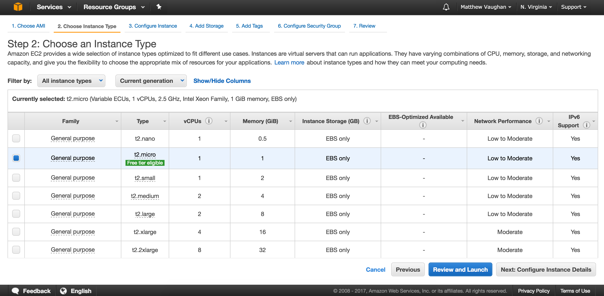
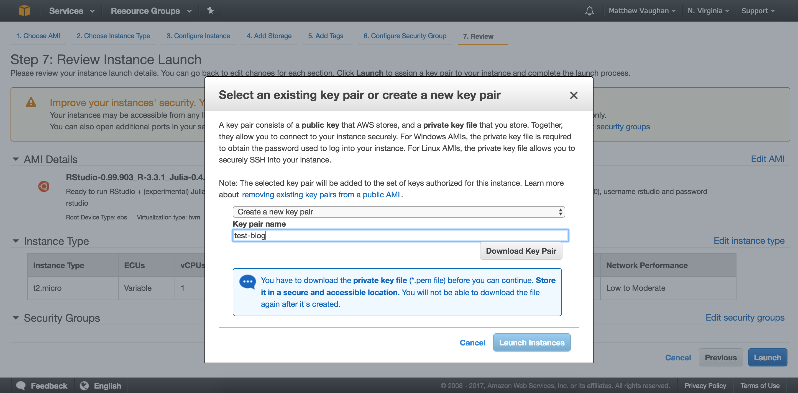
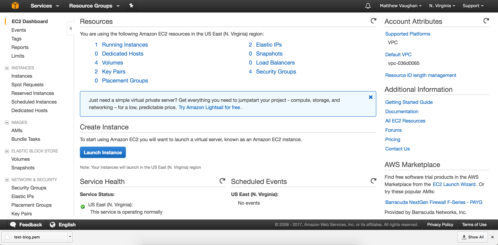
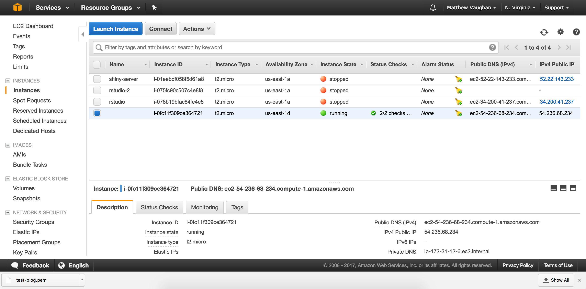
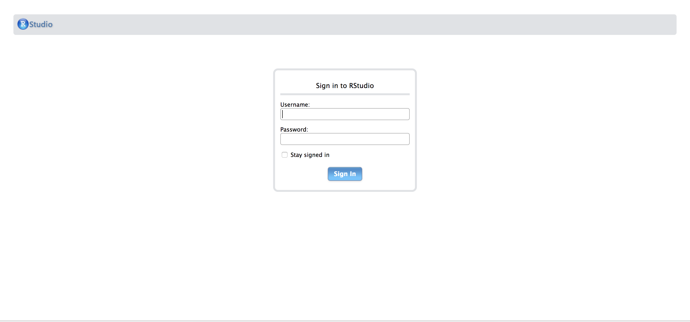
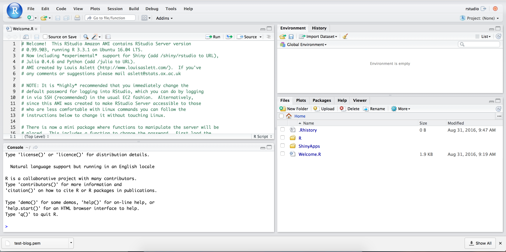
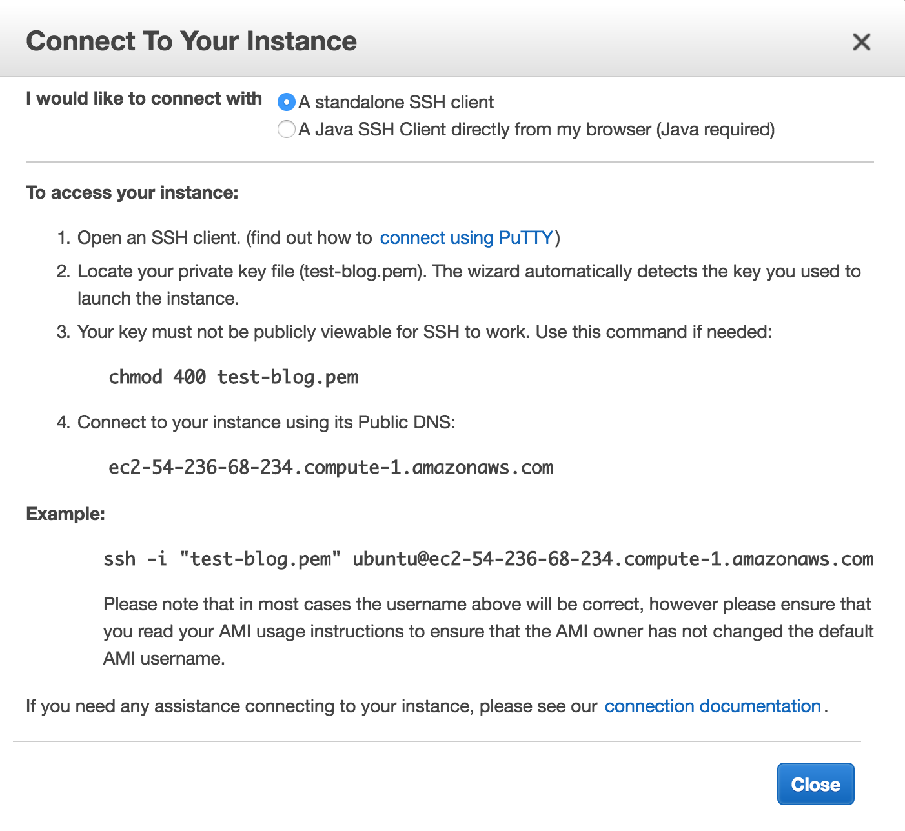
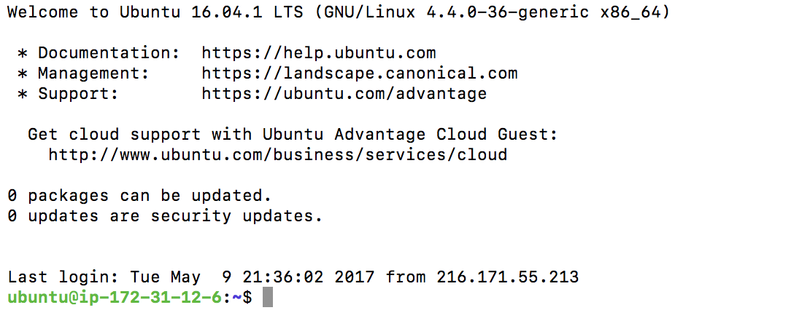

EDIT -> Add Rule -> Type set it to HTTP -> change the source from Custom to Anywhere -> SaveAfter realizing how fast I can burn through my free 25 hours on shinyapps.io, I decided to repurpose my RStudio Server to also work with Shiny Server. Here’s my new setup:
- 1 AWS EC2 server with an elastic IP address
- 1 Route 55 Amazon domain linked to the EC2 elastic IP (davisvaughan.com)
- RStudio Server
- Shiny Server
In case I ever have to go through this madness again, or if anyone else wants to, I’ve compiled some step by step notes on the setup. It’s definitely worth it, though, so that you can have your own RStudio and Shiny servers!
(I know that some others have already done posts like this, but I went into even more laborious detail on some of the basics.)
In this post, I will walk you through getting up and running with an RStudio server. In the next post, you’ll learn to get Shiny server working.
Step 1: Setup an AWS Account
Amazon is nice enough to provide 1 year’s worth of access to their Free Tier for AWS. There are a huge number of options available, but the important one is that they provide a free 750 hours/month to deploy an EC2 instance. That’s just enough to keep 1 EC2 instance active 24/7, since 24 hours x 31 days = 744.
If you aren’t familiar with EC2, think of it as your own personal always-on Linux computer that you can connect to through SSH, and access through the web by using an IP address. One step further and you can access it through a custom domain name.
Create your free AWS account, and come back when you’ve finished. You should be able to click on the giant sign in button, and sign in to your console.

If all goes well, you’ll be at the console.

We won’t do anything else yet, just stay signed in.
Step 2: Setup the RStudio Amazon Machine Image
It’s worth it to get familiar with setting up your own EC2 server, but we won’t have to do that here. Luckily, Louis Aslett has created an Amazon Machine Image (AMI) to take care of all of the hard work for us. It’s basically some preconfigured settings that at the time of writing install the following:
- RStudio Server 0.99.903
- R 3.3.1
- Shiny Server
- Julia 0.4.6
- Python 3.5.2
- Git
You can find the link to the image here. Click one of the links on the right to start the setup, I normally click the one closest to me regionally.
The Virginia link takes me here:

You can click through the settings, but to just get setup, click “Review and Launch.” It will let you review one last time, and will likely warn you about security, we will change all that later, just click “Launch.”
Important! Amazon will pop up a message box that talks about a key pair. This is how you will SSH into your server later on. This is really important, as you only get this screen one time, and can never come back to it. Setup a new key pair name (it can be anything), and click “Download Key Pair.”

Store the .pem key pair file somewhere on your local computer. This should be a secure location, but somewhere you can remember the file path to. Then click Launch Instances.
At the top of the next screen, click Services, and then select EC2. This will take you to the EC2 Dashboard. You should see that you have “1 Running Instance.”

Click on “1 Running Instance,” and you’ll see your server starting up. Below, it’s the one that says “running.”

There’s one last thing to do before we can access the server. We have to setup the security to allow HTTP (web browser) access. In the “Description” tab in the bottom half of the above image, scroll down until you see “Security Groups.” You’ll likely have something like “launch-wizard-1” there. Click on that.
On the next screen, click the “Inbound” tab down where “Description” is listed. As you can see, only the SSH option is available for accessing the instance. Let’s change that.
Click:
Note that this is not a secure option, but it’ll get you going.
Finally, to check that you’re up and running, go back to your instances tab (the same image as above). See the Public DNS (IPv4) box? Copy that, and paste it into your browser as a URL. It should take you to an authentication page for RStudio Server. Congrats! You’ve figured something out that took me hours.
Defaults:
- Username - rstudio
- Password - rstudio
Clever, right?

If it worked, you should see this.

Step 3: New password for RStudio Server
It’s advised that you immediately change the password. There are two ways to do so. The first way is easy. In the Welcome.R file that is shown above, you’ll see a description for how to library("RStudioAMI") and then run passwd(). You can do that, but eventually you’ll have to SSH into your server for something, so you may as well learn how now.
Have you still got the AWS Console Instances page up? The one where you found the Public DNS (IPv4). Here it is again.
AWS has made it pretty easy to connect through SSH. Click the “Connect” button. A window should pop up with some pretty detailed instructions. Do you have the path to your .pem file lying around? You’re going to need it!

I run on a Mac, so I’ll be using Terminal. If you run on Windows, you’ll need to download PuTTY. Open up Terminal, and type in the following for step 3:
chmod 400 path_to_file/file.pemNote that you actually need to locate your pem file, and pass Terminal the path. This command hides the file, and is necessary to connect.
Next you’ll connect to your instance by typing:
ssh -i "path_to_file/file.pem" ubuntu@ec2-IPADDRESS.compute-1.amazonaws.comAgain, you’ll have to type in the correct path, but the IP address shown for you should be correct.
When you connect for the first time, it might give you a prompt basically saying, “Are you sure?” Type yes. Hopefully you’ll see something like this:

To update the password for the rstudio user:
sudo passwd rstudioThen follow the prompts. Type exit to disconnect from the server, and go back to your RStudio Server site. Try and login with the new password.
Step 4: Update everything
Unfortunately, the Amazon Images are only updated every few releases of RStudio Server. However, it’s not too hard to get the newest release installed straight from RStudio’s site.
You’ll need to first set the CRAN mirror on your Ubuntu server so that you can actually download the latest version of R. This part is a bit of a pain, requiring you to work with some text editors through Terminal, but bear with me.
Sign back into your Linux server through Terminal following the above instructions. When you’re done, type:
ls
# rstudio-server-1.0.143-amd64.deb shiny-server-1.5.3.838-amd64.debAnd you should see a few .deb files, one for rstudio-server and one for shiny-server (mine are already upgraded). If you don’t, well, hopefully you can still try and follow along (Maybe cd ~ will get you there? Maybe go back to step 1?).
Now, we need to navigate to the correct file and add the CRAN mirror to it. That is located at /etc/apt/sources.list for you pros. For the rest of us, follow along.
First navigate up two levels:
cd ../..
ls
# bin etc initrd.img.old lib media proc sbin sys var
# boot home jupyterhub_cookie_secret lib64 mnt root snap tmp vmlinuz
# dev initrd.img jupyterhub.sqlite lost+found opt run srv usr vmlinuz.oldThen, we need to get into etc/apt:
cd etc/apt
ls
# apt.conf.d sources.list sources.list.save trusted.gpg~
# preferences.d sources.list.d trusted.gpg trusted.gpg.dI don’t have a whole lot of experience with terminal editors, but I know enough to get by. I will use nano, which I believe comes on every Mac, to open up my sources.list file. sudo is likely needed to give admin privelages so you can save the file afterwards.
sudo nano sources.listA file should open, scroll all the way down to the bottom, and on a new line paste:
deb https://cloud.r-project.org/bin/linux/ubuntu/ xenial/There are a number of different versions of this command here, but this specific one works because the Amazon Image you downloaded uses Xenial (tbh I don’t really know what that means, trial and error and a bit of common sense got it to work).
Now you have to escape from nano, a first-timer’s nightmare. Follow this sequence of commands:
^X # Control+X This is used to "Quit"
Y # Yes This is used to save the file when it asks you
# Then click Enter/Return on your keyboard to resave the file with the same nameNow that that is taken care of, navigate back to:
cd ~And you can update all of the linux apps, and then download the latest version of R using the two commands:
sudo apt-get update
sudo apt-get install r-baseFinally, you’ll update to the latest version of RStudio Server. At the time of writing, this is 1.0.143, but it updates regularly, so go here and scroll down to find the latest update for 64bit Ubuntu. The commands generally look like:
sudo apt-get install gdebi-core
wget https://download2.rstudio.org/rstudio-server-1.0.143-amd64.deb
sudo gdebi rstudio-server-1.0.143-amd64.debAll done? Great! exit out of your Linux server, and reload your RStudio Server in the browser. When you login, you should be able to run version to see the latest version of R, and go to Help -> About RStudio to see the updated version of RStudio Server!
Last words
This was quite the struggle. There are a few other resources out there to help, but I still struggled through some pieces of this one. Hopefully it wasn’t near as bad for you! In the next post, I’ll show you how to update your Shiny Server and start hosting your own apps on there (with no 5 app limit like shinyapps.io)!
Here are some additional resources that I found helpful when setting up my server: